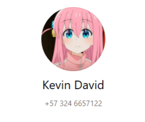
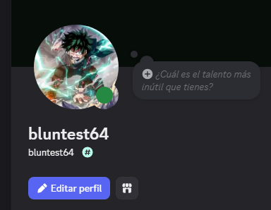

Descripcion rapida
Mi nombre es Kevin, esta es una pagina que fue creada con la intención de que me conoscan más a detalle o que sepan de mi, vayan a las opciones para lo que les interese conocer de mi
Perfil principal

Whatsapp
Acerca de mi
Mi nombre completo es Kevin David Gómez Posada, tengo 18 años de edad, vivo en sabanalargaGustos
- Me gusta la programación, la idea de poder crear y plasmar en digital mis ideas y pensamientos es agradable, a pesar de que tambien da flojerita si se hace demasiado
- Me gustan los videojuegos, mundos llenos de historias que pueden traer cualquier cosa menos algo que tu esperes, los juegos que prefiero son aquellos con transfondo y una historia atrapante e interesante
- Me gustan demasiados tipos de musica, aunque no me agradan mucho los generos musicales de pueblos, casi ni me acuerdo de los productores ya que no es que escuche la musica de un cantante especificamente, si es buena me la quedo y si no la paso, aunque si tengo algunos cantantes y grupos que me gustan
- Me gustan bastante las peliculas ya sean animadas o live action, mis sagas favoritas son la de Harry potter Piratas del caribe, la trilogia de mi villano favorito (lo cuatro no es buena), la trilogia de kung fu panda (lo mismo que el anterior), la saga de rapidos y furiosos.
- Me gustan mucho las caricaturas y el anime, clasicos como Hora de Aventura, Un Show más hasta caricaturas mas de culto como más allá del jardín y el tren infinito que tocan temas mas serios, anime clasico como Inazuma Eleven y Caballeros del Zodiaco hasta animes mas serios como takopi no ganzai o Angel de la muerte y death note.
- Me encanta el sabor acido, e comido mangos tan verdes que terminaba mordiendo por accidente la semilla que por lo verde estaba totalmente suave, solo para que sepan, no sabe nada bien, tambien e comido limones con la cascara solo porque se arracaban junto con el interior, con tal de sentir el maximo sabor acido llegé a mezclar limon carambolo y maraculla sin agua, creo que la mayor parte del acido solo fue por el limon.
Proyectos
Tengo un proyecto en marcha el cual estoy realizando en el sitio web google colab, alli estoy haciendo una historia interactiva, me e mantenido muy ocupado asi que lo e tenido agarrando polvo, aunque, estoy seguro de que no falta mucho para que lo retome y lo traiga a esta pagina, asi que estoy seguro de que lo traere algun dia... si, alun dia.Estoy haciendo tambien una pagina web dedicada a un personaje, esa es la mas reciente, Tengo varios proyectos mas debo aprender mas para desarrollarlos bien, se ira actualizando a la pagina con el tiempo
Mis perfiles
Perfiles secundarios
Tik Tok
